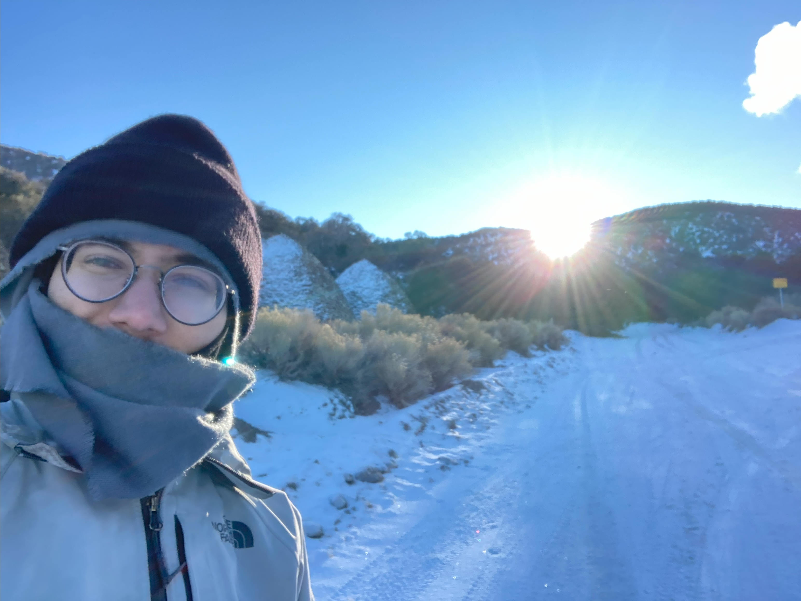
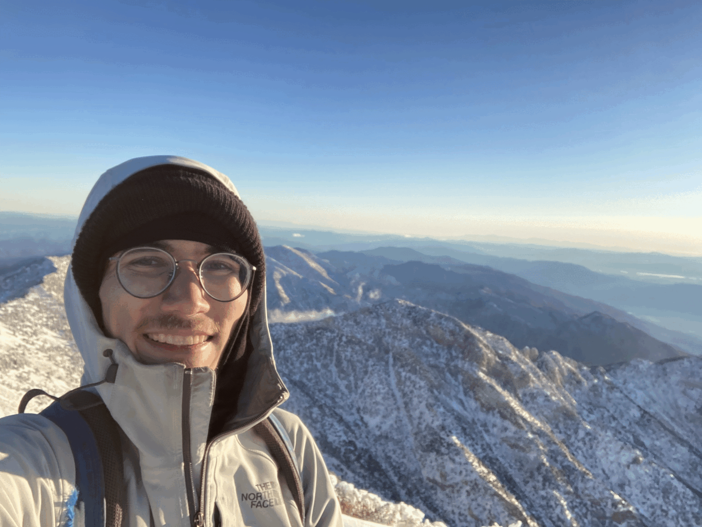
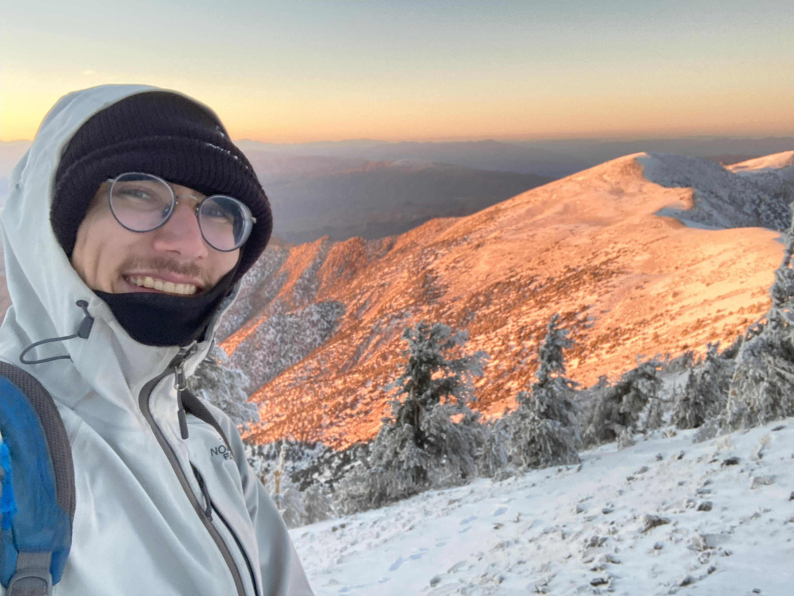
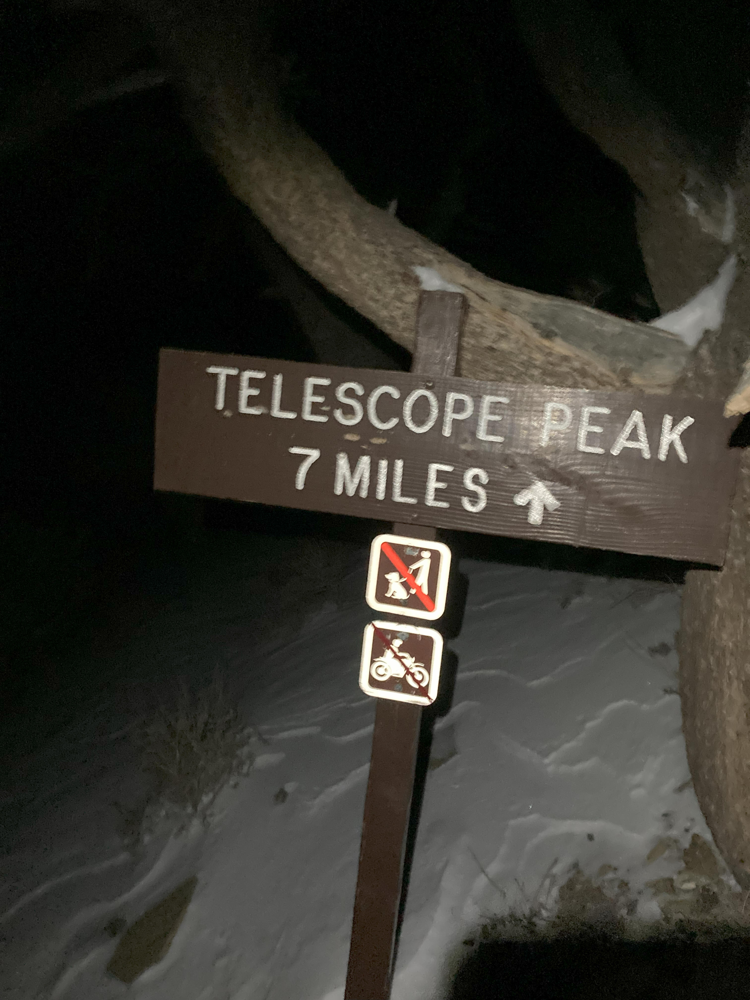
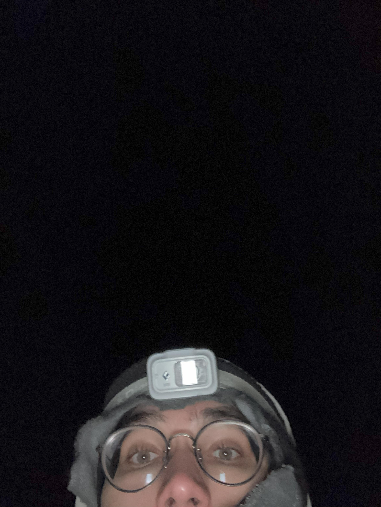
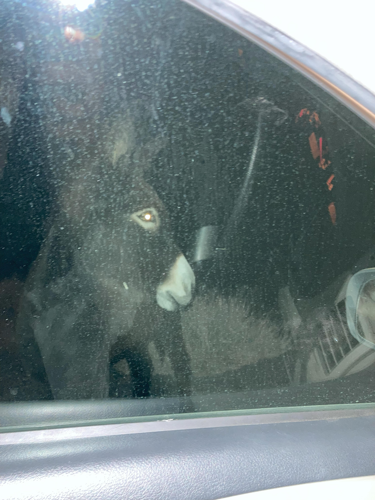

Hikes:
Telescope Peak 2022
Very long and cold day hike, but I made it to the top!
Telescope Peak
This was a hike I did after returning to death valley a second time after failing to summit Wildrose peak in 2021
Stats:
Date: December 13 2022
Elevation at summit: 3368 m (11,049 ft)
Elevation gain: 1426 m (4,677 ft)
Distance: 26 km (16 miles)
Time: 12 hr
Starting at Charcoal Kilns
Unlike 2023, there was nobody else up here, and the night before I made and ate dinner inside one of the old kilns
The kilns are on the left
The hike up
I didn't really think to take photos on my way up, which is a shame, because the sunlight was best at that time. But I remeber getting near the summit, losing the trail (and having to tramp back down a ways to retrive my fallen walking stick)
The summit
The Summit was very beautiful, but I was not fully prepared for the wind. I left a note in the ammo box at the top and took some photos.


Decent
I caught the sunset about an hour into my decent, which was pretty, but meant I did a lot of the hike in the dark

Summer Trailhead
This is the closer trailhead, inaccesable by car during winter

Ending
I got back well after sundown, which was a bit eerie, but quite fun.

Bonus
I saw some burros on the drive down.

Cone Peak 2021
bushwacked through wildfire-scorched land, got eaten alive by bugs on the way up, and ran out of water on the way down, but the top of Cone peak had the most beautiful views!
Cone Peak
This was a hike I did after returning to death valley a second time after failing to summit Wildrose peak in 2021
Stats:
Date: Summer of '21
Elevation at summit: 1788 m (5,865 ft)
Elevation gain: 1788 m (5,865 ft)
Distance: WIP
Time: WIP
One of the Big Sur trips of Covid Summer '21
This picture was taken at Cone Peak. I then went down via the sea-to-summit trail during which I ran out of water. This made the hike a bit of a trial. But the hike remains a great memory.

From the firewatch station at the top of Cone peak.